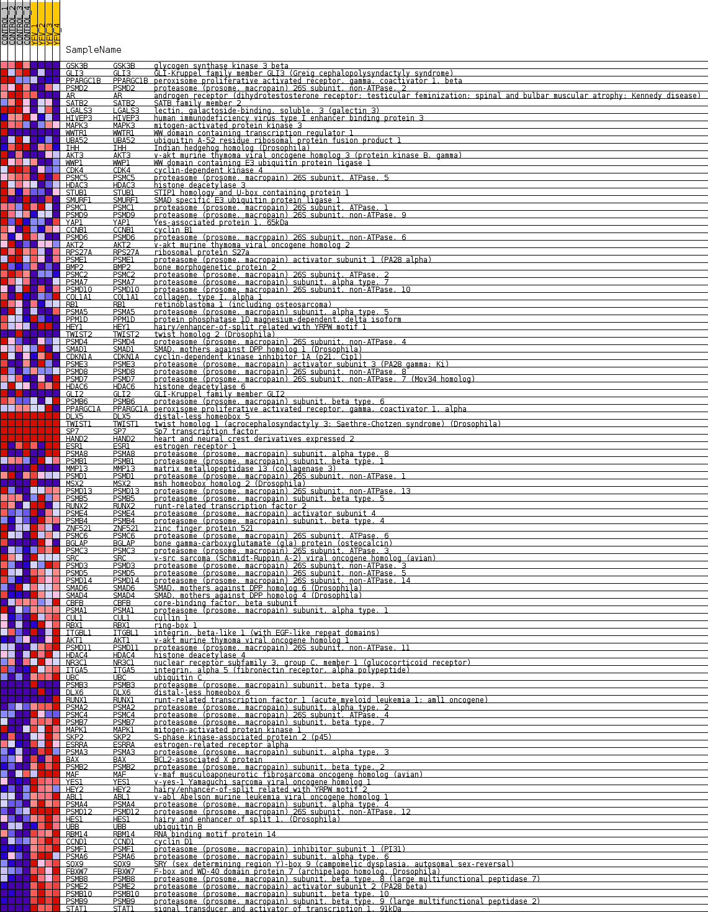
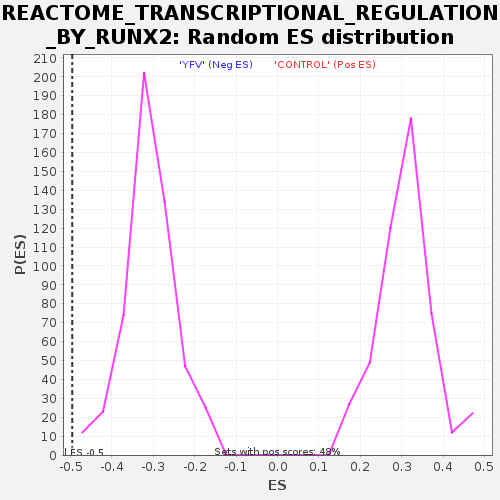

Profile of the Running ES Score & Positions of GeneSet Members on the Rank Ordered List
| Dataset | MATRIZ_GSE99081_collapsed_to_symbols.gsea_CLASE_99081.cls#CONTROL_versus_YFV |
| Phenotype | gsea_CLASE_99081.cls#CONTROL_versus_YFV |
| Upregulated in class | YFV |
| GeneSet | REACTOME_TRANSCRIPTIONAL_REGULATION_BY_RUNX2 |
| Enrichment Score (ES) | -0.49584416 |
| Normalized Enrichment Score (NES) | -1.6173961 |
| Nominal p-value | 0.0 |
| FDR q-value | 0.06421834 |
| FWER p-Value | 0.865 |
| SYMBOL | TITLE | RANK IN GENE LIST | RANK METRIC SCORE | RUNNING ES | CORE ENRICHMENT | |
|---|---|---|---|---|---|---|
| 1 | GSK3B | glycogen synthase kinase 3 beta | 1 | 2.741 | 0.0483 | No |
| 2 | GLI3 | GLI-Kruppel family member GLI3 (Greig cephalopolysyndactyly syndrome) | 61 | 1.463 | 0.0705 | No |
| 3 | PPARGC1B | peroxisome proliferative activated receptor, gamma, coactivator 1, beta | 348 | 0.909 | 0.0688 | No |
| 4 | PSMD2 | proteasome (prosome, macropain) 26S subunit, non-ATPase, 2 | 711 | 0.738 | 0.0594 | No |
| 5 | AR | androgen receptor (dihydrotestosterone receptor; testicular feminization; spinal and bulbar muscular atrophy; Kennedy disease) | 813 | 0.699 | 0.0655 | No |
| 6 | SATB2 | SATB family member 2 | 969 | 0.651 | 0.0674 | No |
| 7 | LGALS3 | lectin, galactoside-binding, soluble, 3 (galectin 3) | 970 | 0.651 | 0.0789 | No |
| 8 | HIVEP3 | human immunodeficiency virus type I enhancer binding protein 3 | 1057 | 0.628 | 0.0846 | No |
| 9 | MAPK3 | mitogen-activated protein kinase 3 | 1456 | 0.538 | 0.0694 | No |
| 10 | WWTR1 | WW domain containing transcription regulator 1 | 1775 | 0.500 | 0.0585 | No |
| 11 | UBA52 | ubiquitin A-52 residue ribosomal protein fusion product 1 | 1969 | 0.488 | 0.0552 | No |
| 12 | IHH | Indian hedgehog homolog (Drosophila) | 2126 | 0.465 | 0.0537 | No |
| 13 | AKT3 | v-akt murine thymoma viral oncogene homolog 3 (protein kinase B, gamma) | 2398 | 0.426 | 0.0444 | No |
| 14 | WWP1 | WW domain containing E3 ubiquitin protein ligase 1 | 2492 | 0.414 | 0.0460 | No |
| 15 | CDK4 | cyclin-dependent kinase 4 | 2745 | 0.376 | 0.0370 | No |
| 16 | PSMC5 | proteasome (prosome, macropain) 26S subunit, ATPase, 5 | 3127 | 0.329 | 0.0191 | No |
| 17 | HDAC3 | histone deacetylase 3 | 3341 | 0.305 | 0.0113 | No |
| 18 | STUB1 | STIP1 homology and U-box containing protein 1 | 3535 | 0.285 | 0.0044 | No |
| 19 | SMURF1 | SMAD specific E3 ubiquitin protein ligase 1 | 3567 | 0.281 | 0.0074 | No |
| 20 | PSMC1 | proteasome (prosome, macropain) 26S subunit, ATPase, 1 | 3697 | 0.267 | 0.0041 | No |
| 21 | PSMD9 | proteasome (prosome, macropain) 26S subunit, non-ATPase, 9 | 3732 | 0.263 | 0.0067 | No |
| 22 | YAP1 | Yes-associated protein 1, 65kDa | 3767 | 0.261 | 0.0092 | No |
| 23 | CCNB1 | cyclin B1 | 3893 | 0.251 | 0.0058 | No |
| 24 | PSMD6 | proteasome (prosome, macropain) 26S subunit, non-ATPase, 6 | 3986 | 0.243 | 0.0044 | No |
| 25 | AKT2 | v-akt murine thymoma viral oncogene homolog 2 | 4123 | 0.233 | 0.0001 | No |
| 26 | RPS27A | ribosomal protein S27a | 4134 | 0.232 | 0.0036 | No |
| 27 | PSME1 | proteasome (prosome, macropain) activator subunit 1 (PA28 alpha) | 4391 | 0.212 | -0.0085 | No |
| 28 | BMP2 | bone morphogenetic protein 2 | 4462 | 0.205 | -0.0093 | No |
| 29 | PSMC2 | proteasome (prosome, macropain) 26S subunit, ATPase, 2 | 4826 | 0.173 | -0.0287 | No |
| 30 | PSMA7 | proteasome (prosome, macropain) subunit, alpha type, 7 | 5238 | 0.134 | -0.0518 | No |
| 31 | PSMD10 | proteasome (prosome, macropain) 26S subunit, non-ATPase, 10 | 5332 | 0.127 | -0.0553 | No |
| 32 | COL1A1 | collagen, type I, alpha 1 | 5421 | 0.119 | -0.0587 | No |
| 33 | RB1 | retinoblastoma 1 (including osteosarcoma) | 5587 | 0.107 | -0.0670 | No |
| 34 | PSMA5 | proteasome (prosome, macropain) subunit, alpha type, 5 | 5659 | 0.102 | -0.0697 | No |
| 35 | PPM1D | protein phosphatase 1D magnesium-dependent, delta isoform | 5678 | 0.100 | -0.0690 | No |
| 36 | HEY1 | hairy/enhancer-of-split related with YRPW motif 1 | 6054 | 0.071 | -0.0910 | No |
| 37 | TWIST2 | twist homolog 2 (Drosophila) | 6291 | 0.054 | -0.1047 | No |
| 38 | PSMD4 | proteasome (prosome, macropain) 26S subunit, non-ATPase, 4 | 6348 | 0.049 | -0.1073 | No |
| 39 | SMAD1 | SMAD, mothers against DPP homolog 1 (Drosophila) | 6363 | 0.048 | -0.1073 | No |
| 40 | CDKN1A | cyclin-dependent kinase inhibitor 1A (p21, Cip1) | 6633 | 0.031 | -0.1234 | No |
| 41 | PSME3 | proteasome (prosome, macropain) activator subunit 3 (PA28 gamma; Ki) | 6661 | 0.029 | -0.1246 | No |
| 42 | PSMD8 | proteasome (prosome, macropain) 26S subunit, non-ATPase, 8 | 6710 | 0.026 | -0.1271 | No |
| 43 | PSMD7 | proteasome (prosome, macropain) 26S subunit, non-ATPase, 7 (Mov34 homolog) | 6854 | 0.018 | -0.1357 | No |
| 44 | HDAC6 | histone deacetylase 6 | 6909 | 0.015 | -0.1388 | No |
| 45 | GLI2 | GLI-Kruppel family member GLI2 | 6935 | 0.014 | -0.1401 | No |
| 46 | PSMB6 | proteasome (prosome, macropain) subunit, beta type, 6 | 7048 | 0.008 | -0.1469 | No |
| 47 | PPARGC1A | peroxisome proliferative activated receptor, gamma, coactivator 1, alpha | 7129 | 0.004 | -0.1517 | No |
| 48 | DLX5 | distal-less homeobox 5 | 7677 | 0.000 | -0.1857 | No |
| 49 | TWIST1 | twist homolog 1 (acrocephalosyndactyly 3; Saethre-Chotzen syndrome) (Drosophila) | 7722 | 0.000 | -0.1884 | No |
| 50 | SP7 | Sp7 transcription factor | 8278 | 0.000 | -0.2228 | No |
| 51 | HAND2 | heart and neural crest derivatives expressed 2 | 8528 | 0.000 | -0.2383 | No |
| 52 | ESR1 | estrogen receptor 1 | 9481 | -0.001 | -0.2973 | No |
| 53 | PSMA8 | proteasome (prosome, macropain) subunit, alpha type, 8 | 9584 | -0.007 | -0.3035 | No |
| 54 | PSMB1 | proteasome (prosome, macropain) subunit, beta type, 1 | 9745 | -0.014 | -0.3132 | No |
| 55 | MMP13 | matrix metallopeptidase 13 (collagenase 3) | 9831 | -0.018 | -0.3181 | No |
| 56 | PSMD1 | proteasome (prosome, macropain) 26S subunit, non-ATPase, 1 | 10102 | -0.030 | -0.3343 | No |
| 57 | MSX2 | msh homeobox homolog 2 (Drosophila) | 10272 | -0.043 | -0.3440 | No |
| 58 | PSMD13 | proteasome (prosome, macropain) 26S subunit, non-ATPase, 13 | 10422 | -0.053 | -0.3523 | No |
| 59 | PSMB5 | proteasome (prosome, macropain) subunit, beta type, 5 | 10473 | -0.058 | -0.3544 | No |
| 60 | RUNX2 | runt-related transcription factor 2 | 10657 | -0.072 | -0.3645 | No |
| 61 | PSME4 | proteasome (prosome, macropain) activator subunit 4 | 10799 | -0.085 | -0.3717 | No |
| 62 | PSMB4 | proteasome (prosome, macropain) subunit, beta type, 4 | 10839 | -0.088 | -0.3726 | No |
| 63 | ZNF521 | zinc finger protein 521 | 10860 | -0.090 | -0.3723 | No |
| 64 | PSMC6 | proteasome (prosome, macropain) 26S subunit, ATPase, 6 | 11010 | -0.102 | -0.3797 | No |
| 65 | BGLAP | bone gamma-carboxyglutamate (gla) protein (osteocalcin) | 11199 | -0.120 | -0.3892 | No |
| 66 | PSMC3 | proteasome (prosome, macropain) 26S subunit, ATPase, 3 | 11528 | -0.149 | -0.4069 | No |
| 67 | SRC | v-src sarcoma (Schmidt-Ruppin A-2) viral oncogene homolog (avian) | 11630 | -0.158 | -0.4104 | No |
| 68 | PSMD3 | proteasome (prosome, macropain) 26S subunit, non-ATPase, 3 | 11846 | -0.178 | -0.4206 | No |
| 69 | PSMD5 | proteasome (prosome, macropain) 26S subunit, non-ATPase, 5 | 11911 | -0.185 | -0.4213 | No |
| 70 | PSMD14 | proteasome (prosome, macropain) 26S subunit, non-ATPase, 14 | 11924 | -0.186 | -0.4188 | No |
| 71 | SMAD6 | SMAD, mothers against DPP homolog 6 (Drosophila) | 12414 | -0.235 | -0.4449 | No |
| 72 | SMAD4 | SMAD, mothers against DPP homolog 4 (Drosophila) | 12525 | -0.248 | -0.4474 | No |
| 73 | CBFB | core-binding factor, beta subunit | 12776 | -0.274 | -0.4581 | No |
| 74 | PSMA1 | proteasome (prosome, macropain) subunit, alpha type, 1 | 12891 | -0.287 | -0.4601 | No |
| 75 | CUL1 | cullin 1 | 12992 | -0.300 | -0.4610 | No |
| 76 | RBX1 | ring-box 1 | 13011 | -0.302 | -0.4568 | No |
| 77 | ITGBL1 | integrin, beta-like 1 (with EGF-like repeat domains) | 13081 | -0.311 | -0.4556 | No |
| 78 | AKT1 | v-akt murine thymoma viral oncogene homolog 1 | 13167 | -0.324 | -0.4551 | No |
| 79 | PSMD11 | proteasome (prosome, macropain) 26S subunit, non-ATPase, 11 | 13564 | -0.374 | -0.4731 | No |
| 80 | HDAC4 | histone deacetylase 4 | 13694 | -0.394 | -0.4741 | No |
| 81 | NR3C1 | nuclear receptor subfamily 3, group C, member 1 (glucocorticoid receptor) | 13945 | -0.431 | -0.4820 | No |
| 82 | ITGA5 | integrin, alpha 5 (fibronectin receptor, alpha polypeptide) | 14089 | -0.458 | -0.4828 | No |
| 83 | UBC | ubiquitin C | 14182 | -0.479 | -0.4800 | No |
| 84 | PSMB3 | proteasome (prosome, macropain) subunit, beta type, 3 | 14438 | -0.500 | -0.4870 | Yes |
| 85 | DLX6 | distal-less homeobox 6 | 14499 | -0.500 | -0.4819 | Yes |
| 86 | RUNX1 | runt-related transcription factor 1 (acute myeloid leukemia 1; aml1 oncogene) | 14501 | -0.500 | -0.4731 | Yes |
| 87 | PSMA2 | proteasome (prosome, macropain) subunit, alpha type, 2 | 14672 | -0.535 | -0.4742 | Yes |
| 88 | PSMC4 | proteasome (prosome, macropain) 26S subunit, ATPase, 4 | 14766 | -0.557 | -0.4702 | Yes |
| 89 | PSMB7 | proteasome (prosome, macropain) subunit, beta type, 7 | 14794 | -0.565 | -0.4619 | Yes |
| 90 | MAPK1 | mitogen-activated protein kinase 1 | 14865 | -0.583 | -0.4559 | Yes |
| 91 | SKP2 | S-phase kinase-associated protein 2 (p45) | 14868 | -0.584 | -0.4457 | Yes |
| 92 | ESRRA | estrogen-related receptor alpha | 14927 | -0.600 | -0.4387 | Yes |
| 93 | PSMA3 | proteasome (prosome, macropain) subunit, alpha type, 3 | 14958 | -0.609 | -0.4298 | Yes |
| 94 | BAX | BCL2-associated X protein | 15059 | -0.642 | -0.4247 | Yes |
| 95 | PSMB2 | proteasome (prosome, macropain) subunit, beta type, 2 | 15120 | -0.662 | -0.4167 | Yes |
| 96 | MAF | v-maf musculoaponeurotic fibrosarcoma oncogene homolog (avian) | 15138 | -0.669 | -0.4060 | Yes |
| 97 | YES1 | v-yes-1 Yamaguchi sarcoma viral oncogene homolog 1 | 15296 | -0.740 | -0.4027 | Yes |
| 98 | HEY2 | hairy/enhancer-of-split related with YRPW motif 2 | 15297 | -0.742 | -0.3896 | Yes |
| 99 | ABL1 | v-abl Abelson murine leukemia viral oncogene homolog 1 | 15336 | -0.758 | -0.3785 | Yes |
| 100 | PSMA4 | proteasome (prosome, macropain) subunit, alpha type, 4 | 15508 | -0.833 | -0.3744 | Yes |
| 101 | PSMD12 | proteasome (prosome, macropain) 26S subunit, non-ATPase, 12 | 15525 | -0.844 | -0.3605 | Yes |
| 102 | HES1 | hairy and enhancer of split 1, (Drosophila) | 15594 | -0.870 | -0.3494 | Yes |
| 103 | UBB | ubiquitin B | 15642 | -0.918 | -0.3361 | Yes |
| 104 | RBM14 | RNA binding motif protein 14 | 15645 | -0.925 | -0.3199 | Yes |
| 105 | CCND1 | cyclin D1 | 15671 | -0.941 | -0.3048 | Yes |
| 106 | PSMF1 | proteasome (prosome, macropain) inhibitor subunit 1 (PI31) | 15701 | -0.986 | -0.2892 | Yes |
| 107 | PSMA6 | proteasome (prosome, macropain) subunit, alpha type, 6 | 15762 | -1.053 | -0.2744 | Yes |
| 108 | SOX9 | SRY (sex determining region Y)-box 9 (campomelic dysplasia, autosomal sex-reversal) | 15992 | -1.565 | -0.2609 | Yes |
| 109 | FBXW7 | F-box and WD-40 domain protein 7 (archipelago homolog, Drosophila) | 16001 | -1.606 | -0.2331 | Yes |
| 110 | PSMB8 | proteasome (prosome, macropain) subunit, beta type, 8 (large multifunctional peptidase 7) | 16014 | -1.655 | -0.2046 | Yes |
| 111 | PSME2 | proteasome (prosome, macropain) activator subunit 2 (PA28 beta) | 16061 | -1.905 | -0.1738 | Yes |
| 112 | PSMB10 | proteasome (prosome, macropain) subunit, beta type, 10 | 16150 | -2.694 | -0.1317 | Yes |
| 113 | PSMB9 | proteasome (prosome, macropain) subunit, beta type, 9 (large multifunctional peptidase 2) | 16195 | -3.614 | -0.0707 | Yes |
| 114 | STAT1 | signal transducer and activator of transcription 1, 91kDa | 16215 | -4.153 | 0.0015 | Yes |

